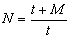
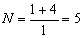
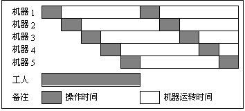
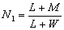
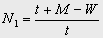

1 . 教学安排
2 . 操作分析的定义与类型
3 . 人机操作分析
 人机操作分析的意义与目的
人机操作分析的意义与目的
人机操作图的构成
人机操作程序图实例分析
闲余能量分析
4 . 联合操作分析
5 . 双手操作分析
6 . 思考与练习题
 返回课程学习首页
返回课程学习首页
闲余能量分析
人机操作分析的目的，在于了解工人或机器的闲余能量，设法利用以提高工效。闲余能量的分析可从下面三个方面进行。
(1)机器的闲余能量
在机器加工的过程中，装、卸工件的工作是为了保证机器加工得以实现的辅助操作，对工件本身的变化不直接起作用，因此应尽量减少这部分工作所占的时间。因机器工作能力的不平衡而产生的空闲，可从平整生产线来解决。至于影响机器加工时间的因素，可从零件的加工精度以及机器的负载能量两方面考虑。
(2)工人的闲余能量
工人的闲余能量主要考虑在机器自动加工时而产生的人工空闲，通过考虑安排两个不同作业交叉进行来利用工人的闲余能量。
(3)工人与机器数的确定
工人数的确定通常以一年或一月的工作量为依据计算：
在人机工作时，常用下式计算一个工人看管的机器数：

式中 N ：一个工人操作的机器数；
t ：一个工人操作一台机器所需时间(包括从一台机器走到另一台机器的时间)；
M ：机器完成该项工作的机动时间。
现设定一个工人操作一台机器所需时间t为1 min，机器完成该项工序的机动时间M为4 min，则：
 ，即一个工人能同时操作5台机器，如图6-6所示。

但有时会出现另外一种情况，即如果多增加一台机器，可能机器有若干空闲；而减少一台机器，则又会发生工人空闲，此时应衡量工人或机器空闲对成本的影响。可用一个工人操作机器的最低数来衡量，即：

式中 N1：一个工人操作机器的最低数；
L：装、卸工件时间；
M：机器机动时间；
W：工人由一台机器走到另一台机器所需时间；
L+W：工人操作机器所需时间；
L+M：为一台机器的作业周期。
一个工人操作机器的最低数还可以表示为：
